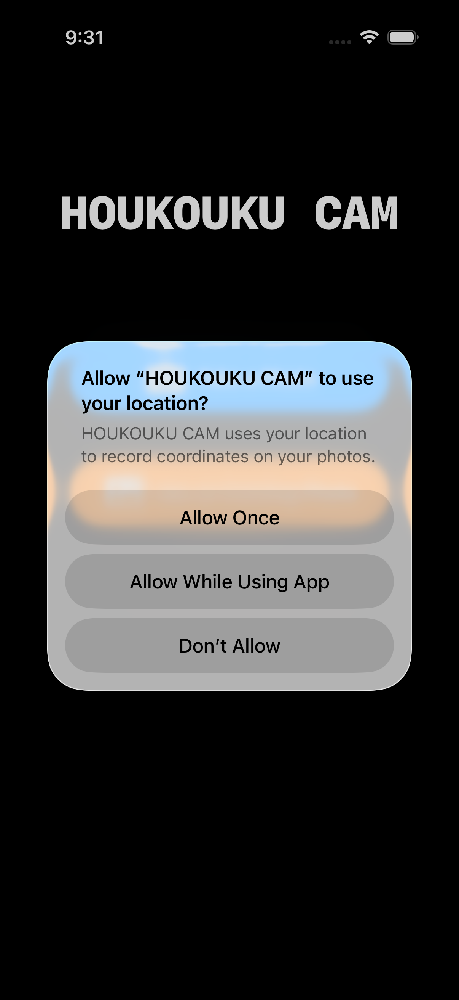
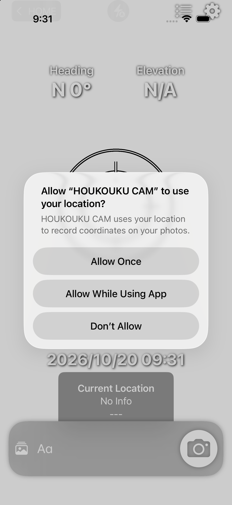
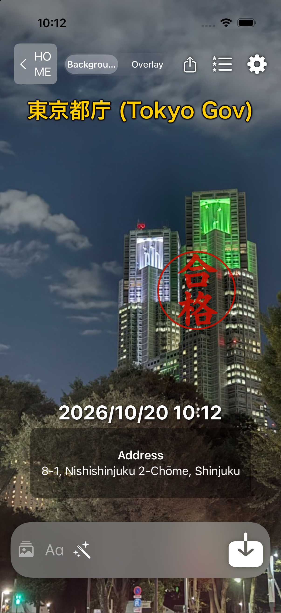
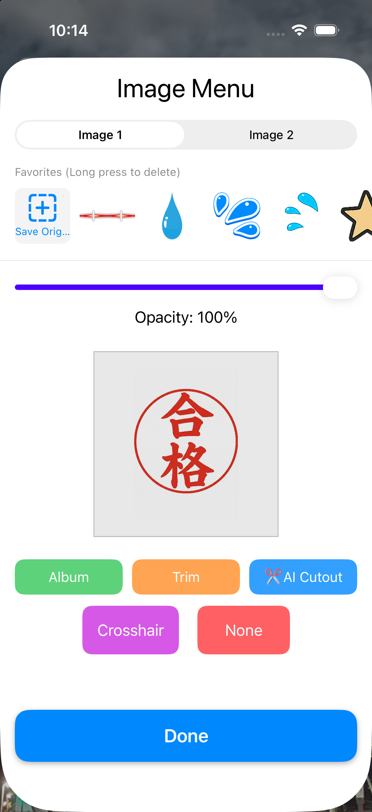
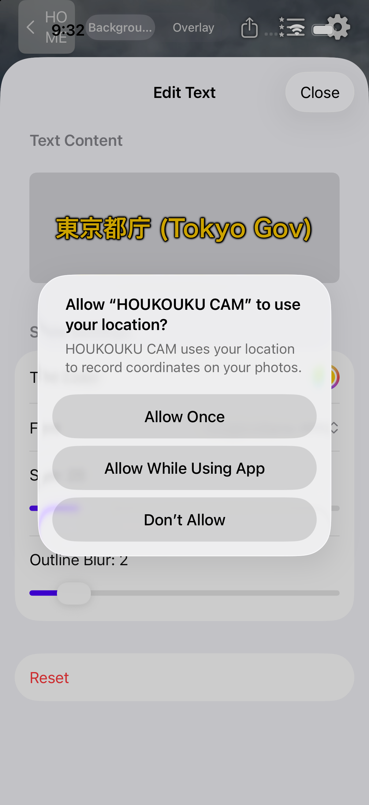
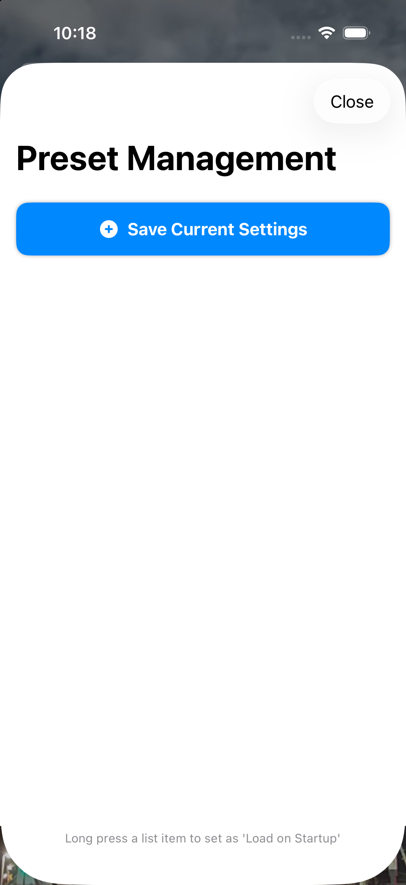
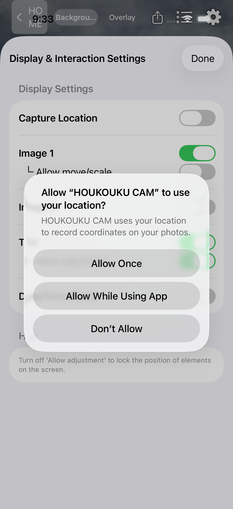

Privacy Policy & Support for HOUKOUKU CAM
最終更新日 / Last Updated: 2026-10-20 (Ver 5.2)
プライバシーポリシー & サポート (日本語)
HOUKOUKU CAM（ホウコウク・カム）をご利用いただきありがとうございます。本アプリは、写真に「方位・仰角」「撮影地の住所・緯度経度」「撮影日時」「画像スタンプ」「自由な文字」をリアルタイムまたは既存の写真に重ねて記録・編集できるカメラ＆フォトエディターアプリです。
現場記録や工事報告、不動産調査の証拠写真から、美味しいご飯・カフェ巡り・グルメのSNS記録、旅行・推し活の記念フォトまで幅広くご活用いただけます。
1. プライバシー保護とデータ処理（100% オンデバイス）
- 完全オンデバイス処理: カメラ撮影、現在地・住所・方位・傾きの計測、画像スタンプの合成、文字の描画、AI被写体切り抜きなどのすべての機能は、お客様のiPhone端末内（ローカル）で直接実行されます。
- 外部サーバーへの送信・保存ゼロ: お客様が撮影した写真、読み込んだアルバム画像、位置情報（GPS座標・住所）が外部サーバーやクラウドへ送信・収集されることは一切ありません。オフライン環境でも完全にご利用いただけます。
- 写真ライブラリと位置情報へのアクセス: 写真の保存、編集用素材の読み込み、および画面上への正確な位置情報表示のためにのみ各権限を使用します。
- EXIFメタデータの保持: 写真保存時に、標準の写真アプリのマップや日付検索でスムーズに管理できるよう、位置情報（ジオタグ）と撮影日時メタデータを保持して保存します。
2. 画面でわかるビジュアル操作マニュアル
アプリの基本的な画面遷移と各機能の使い方です。

起動・モード選択画面
アプリを起動するとシンプルなモード選択画面が表示されます。
・青色ボタン「カメラで撮影」: リアルタイムに方位・仰角・住所を確認しながら撮影するメイン画面へ遷移します。
・橙色ボタン「写真を素材にする」: アルバムの写真（美味しい料理や過去の現場写真）を取り込み、後から情報を重ねて加工できます。

カメラ撮影モード（リアルタイムHUD）
画面上に「方位」「仰角」「住所」「日時」がリアルタイム表示されます。
・各パネルは指でドラッグして好きな位置へ移動可能。
・住所パネルをタップすると「住所」と「緯度・経度」が回転切替。
・上部の⚡フラッシュボタンで「自動 / ON / OFF」を切替可能。
・撮影直後は「すぐに共有」ボタンからSNS・LINEへワンタップ送信。

写真編集モード（既存写真への重畳）
アルバムから写真（例: 東京都庁）を取り込み、撮影当時の位置情報や日時を引き継いだままスタンプや文字を追加できます。
・上部スイッチ: ［背景］で写真自体の位置・拡大調整、［合成］でスタンプや文字の配置を操作。
・🪄魔法の杖（オートエフェクト）: 写真編集モード限定で「キラキラ」「ラブラブ」「汗」「涙」を重畳可能。タップするたびに進化し、「デコレーションを消去」でいつでも元に戻せます。

スタンプ・画像メニュー
画面下部の写真アイコンからスタンプメニューを開きます。
・初期搭載スタンプ: 「合格」「済」などの定番はんこ、花丸、絵文字があらかじめセットされています。
・✂️AI切抜機能: アルバムの写真から人物や料理をAIがワンタップで背景透過スタンプ化。
・原本保存: 作成したスタンプをお気に入りリストへ永続保存できます。

テキスト編集シート
画面下部の「A」アイコンから文字編集シートを開きます。
・自由なテキスト（メモ、工事名、料理名、星評価、感想など）を入力。
・文字色、フォント、背景、縁取りの濃さを細かくカスタマイズでき、どんな背景写真の上でも文字がくっきり読めるよう調整できます。

プリセット管理シート
画面右上の星アイコンからプリセットシートを開きます。
・現在の配置・スタンプ・テキストをお好みの名前で保存し、ワンタップで完全再現。
・リスト項目を長押しするとピン留め（📌）され、次回アプリ起動時に自動で設定をロードします。

設定 & 便利機能
画面右上の歯車アイコンから各種設定を変更できます。
・方位、仰角、場所、日時、スタンプ、テキストの個別表示ON/OFF。
・🔒位置操作を許可スイッチ: OFFにすると画面上の配置を固定（ロック）し、撮影中の不意なズレを防止。
・本体をシェイク: 直前の移動操作を1つ前に戻すUNDO機能。
・下部バー長押し: 見失ったパネルを初期位置に戻す迷子レスキュー機能。
3. 第三者サービス（広告配信について）
- 本アプリは無料提供を維持するため、広告配信パートナーとして Google AdMob を利用しています。広告識別子（IDFA等）は、AppleのApp Tracking Transparency（ATT）ガイドラインに基づき、利用者の許可の範囲内でのみ適切な広告表示のために利用されます。
4. サポート・お問い合わせ
不具合の報告、使い方のサポート、機能のご要望などがございましたら、お気軽に以下までお問い合わせください：
※ App Storeのレビュー欄からもご意見・ご要望をお受けしております。
Privacy Policy & Support (English)
Thank you for using HOUKOUKU CAM. This app is an all-in-one camera and photo editor that allows you to overlay heading, elevation, GPS address, date/time, image stamps, and customizable text in real time or onto existing album photos.
1. Privacy & On-Device Processing
- 100% On-Device Processing: All camera rendering, orientation tracking, address reverse-geocoding, stamp composition, text rendering, and AI cutout processing are performed strictly locally on your iPhone.
- Zero Cloud Uploads: Your photos, location coordinates, and metadata are never transmitted to, stored on, or analyzed by any external servers or cloud services. The app works completely offline.
- Photo Library & Location Permissions: Permissions are requested solely for capturing photos, importing photos for editing, rendering location evidence, and saving output images to your library.
- EXIF Metadata Preservation: When saving photos, original GPS geotags and creation timestamps are embedded so you can easily organize and search them within the iOS Photos app.
2. Visual Step-by-Step Guide
Startup & Mode Selection
Choose your desired workflow upon launch:
・"Take a Photo" (Blue): Live camera mode with real-time compass, elevation, and GPS overlays.
・"Use an Existing Photo" (Orange): Import photos from your library to overlay evidence, date, stamps, or text post-capture.
Live Camera Capture (HUD Overlay)
Real-time HUD displays compass heading, tilt angle (elevation), street address, and timestamp.
・Drag any element to position it freely on screen.
・Tap the address panel to toggle between address and GPS coordinates.
・Top bar flash button toggles "Auto / On / Off".
・Export photos instantly to social media via "Share Now".
Photo Editor Mode (Photo Overlay & Effects)
Import existing photos (e.g. city landmarks, site inspections, foodie logs) with automatic EXIF geotag detection.
・Top Switch: Toggle between [Background] mode (pinch/pan base photo) and [Overlay] mode (move stamps/text).
・Auto Effects (Wand Icon): Add Sparkle, Love, Sweat, or Tears effects. Tap repeatedly to evolve the effect or select "Clear Effects" to reset anytime.
Stamp & Image Menu (AI Cutout)
Open the stamp menu from the bottom photo icon.
・Built-in Stamps: Pre-loaded approval seals, hanamaru marks, and emojis ready to use.
・AI Cutout (✂️): Automatically extract subjects from your photos into transparent stickers.
・Save custom stickers to your favorites list for instant access.
Customizable Text Editor
Add customizable text annotations with fonts, colors, and adjustable outline borders so your text stays readable on any photo.
Preset Layout Templates
Save your favorite layout combinations and recall them anytime. Long-press any preset to pin it (📌) and load it automatically whenever the app starts.
Settings & Interaction Controls
Toggle visibility for each overlay element. Turn off "Allow Adjustment" to lock element positions. Shake device to undo movements, or long-press bottom bar to rescue off-screen elements.
3. Third-Party Services (Advertising)
- To keep HOUKOUKU CAM completely free, we use Google AdMob to display advertisements. AdMob may utilize device identifiers in accordance with your App Tracking Transparency (ATT) settings to display relevant ads.
4. Support & Contact
If you have any questions, bug reports, or feature suggestions, please reach out to us at:
You can also leave feedback and reviews directly on the App Store.